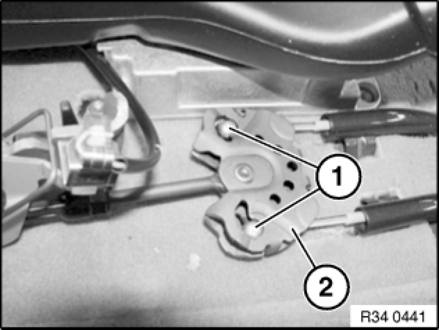

Parking Brake Cable: Service and Repair
34 41 120 - Removing and installing / replacing both handbrake Bowden cables

Special tools required:
- 32 1 030 32 1 030 Lever

Necessary preliminary tasks:
- Remove storage compartment 51 16 200 Removing and Installing Storage Compartment
- Remove rear brake disks Removing and Installing/Replacing Both Brake Discs (Rear)
- Remove exhaust system Service and Repair.
- Remove heat shield.

Lock adjuster unit (ASZE).
Actuate parking brake lever. Screw in special tool 32 1 030 32 1 030 Lever partially. Press stop (1) of adjusting spring back to such an extent that retaining hook (2) engages in stop (1).
Installation:
Unlock adjuster unit (ASZE).
Lever out restraining hook (2) with a suitable screwdriver.
Restraining hook (2) must detach from stop (1) of adjusting spring.

Unclip mounting clip (1) upwards out of balance arm (2).

Guide handbrake Bowden cables (1) with a screwdriver inwards and pull out of balance bar (2).
Disconnect handbrake Bowden cables at expander locks.
Release screw (1) and remove bracket.
Installation:
Tightening torque 34 41 5AZ 34 41 Parking Brake.
Pull handbrake Bowden cables (2) out of wheel carrier.
Disconnect handbrake Bowden cables (1) out of mountings (2).
Pull handbrake Bowden cables (1) out of guide (3).
Feed handbrake Bowden cables (1) out of guide of rear axle (4).
After installation:
- Adjusting parking brake Adjustments